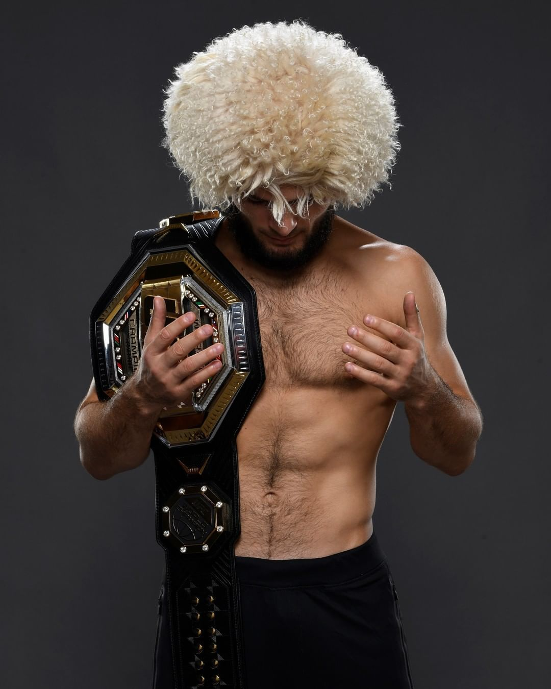

Jakarta - Khabib Nurmagomedov terus dirumorkan akan comeback ke UFC. Khabib pun tiba-tiba bicara soal uang, apakah 'The Eagle' matre?
UFC 254 menjadi panggung terakhir Khabib Nurmagomedov. Di Fight Island, Abu Dhabi pada akhir Oktober kemarin, Khabib menghadapi Justin Gaethje dalam mempertahankan sabuk juara kelas ringan.
Khabib Nurmagomedov, seperti biasa tampil dominan. Khabib cuma butuh dua ronde untuk menumpaskan perlawanan 'The Highlight', lewat triangle choke.
Setelahnya, petarung asal Dagestan itu menyatakan pensiun. Itu tak lepas dari sang ayah Abdulmanap yang tutup usia di bulan Juli kemarin dan sang ibu yang tak mau melihat Khabib bertarung lagi.
Khabib menutup petualangan di dunia MMA dengan rekor gemilang. Dirinya tak pernah kalah dengan rekor kemenangan 29-0, lalu sebagai juara kelas ringan UFC, dan jadi petarung terbaik pound-for-pound di UFC.
Namun rasa-rasanya, para fans tidak rela hati melihat Khabib Nurmagomedov pensiun. Khabib dinilai lagi di puncak kejayaan dan masih bisa terus berlaga.
Maka, rumor Khabib comeback terus mencuat. Conor McGregor mau rematch, Tony Ferguson juga belum bertarung dengannya, dan tentu pertarungan impian menghadapi legenda Georges St-Pierre.
Beberapa kali Khabib Nurmagomedov menyatakan bahwa tidak ada niatan ingin bertarung lagi. Bagi Khabib, dirinya sudah membuktikan sebagai petarung terbaik dan sudah menumpaskan banyak nama besar.
Baru-baru ini, Khabib Nurmaagomedov kembali ditanya soal dirinya comeback. Dilansir dari media Rusia, RT, Khabib ditanya soal peluang kembali bertarung ke UFC.
Lagi-lagi, Khabib bilang tidak akan kembali bertarung. Tapi Khabib, tiba-tiba menyinggung soal uang.
"Dana White (Presiden UFC) akan menggoda saya dengan uang yang sangat banyak. Bayangkan jika dia menawari uang senilai 100 juta USD (Rp 1,4 triliun-red), itu akan jadi masalah," kata Khabib sambil tersenyum.
Sontak, penggalan pernyataan Khabib Nurmagomedov tersebut disambut dengan cepat oleh media-media internasional. Yang intinya, Khabib mau comeback asal dibayar 100 juta USD!
Tapi rupanya, Khabib belum selesai ngomong. Dia menegaskan lagi dan lagi, tidak tertarik dengan uang!
"Itu tidak membuatku tertarik," katanya menyambung pernyataan soal 100 juta USD.
Khabib Nurmagomedov juga sejak lama menyatakan kalau dirinya tidak tertarik dengan uang. Khabib cuma mau titel juara.
Buktinya, dia juga pernah ditawari jumlah uang yang sama untuk menghadapi Floyd Mayweather Jr. Tapi saat itu, dia dengan tegas menolaknya.